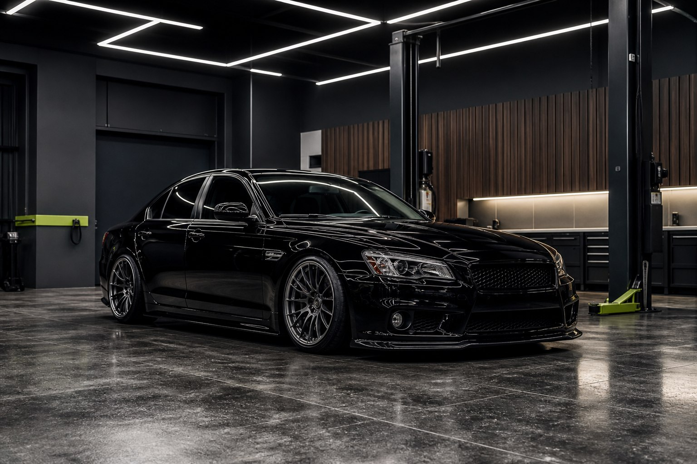
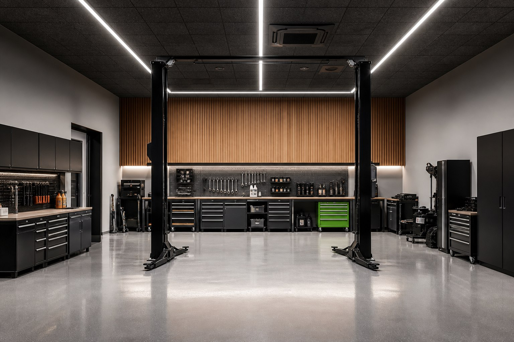
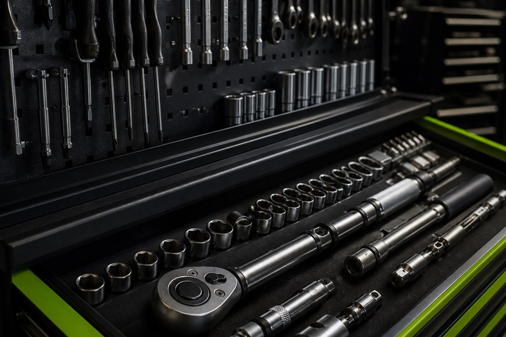
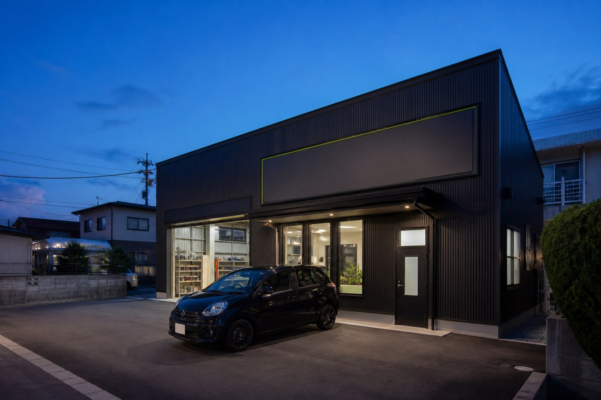

中古車販売
購入後の車検・整備・乗り換えまで見据えてご提案します。
OUR PHILOSOPHY
地域で、ずっと頼れる
カーライフの拠点へ。
F-styleは、徳島市国府町を中心に地域のカーライフを支えるカーショップです。販売して終わりではなく、車検、整備、修理、カスタム、買取・乗り換えまで。
小さな違和感まで見逃さず、一台一台に合わせて仕上げること。長く任せられる確かな仕事を大切にしています。
CUSTOM
見た目だけでは終わらない。乗るたびに違いが伝わる、一台へ。

わずかなズレまで見逃さず、車両全体のバランスを整える。
見た目を整えるだけではなく、タイヤまわりのわずかなズレや全体のバランスまで確認。一台ごとの雰囲気に合わせ、違和感のない仕上がりを追求します。


SERVICE
入口から、その先まで。クルマに関することを一貫して相談できます。
購入後の車検・整備・乗り換えまで見据えてご提案します。
次のカーライフにつながる売却相談を承ります。
資格を持つスタッフが、安心して乗り続けるための点検を行います。
日常点検から不調の相談まで、違和感を見逃さず確認します。
状態とご希望に合わせて、納得できる修理方法をご案内します。
一台一台の雰囲気とバランスを見ながら仕上げます。
万一に備える保険まわりもまとめて相談できます。
INSPECTION / MAINTENANCE
車を任せる場所だから、技術と設備で応えます。
日常の整備から車検、修理の相談まで。資格に裏付けられた点検と、設備の整ったガレージで安心を支えます。
車検・整備を相談するPRICE
内容と車種を確認し、事前にわかりやすくご案内します。
INSPECTION
OIL CHANGE
OTHER SERVICE
PROFESSIONAL / WORKS
資格、設備、施工の積み重ねが、F-styleの品質です。
設備と施工の積み重ねで、信頼をつくる。
F-styleは、車を長く安心して任せられる地域のカーライフショップを目指しています。
ACCIDENT SUPPORT
SHOP / ACCESS
ご相談・ご予約はLINEから。事故受付は専用電話へ。

KOKUFUCHO / TOKUSHIMACONTACT / RESERVATION